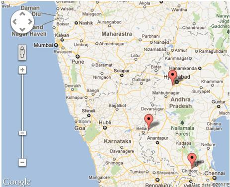

I am setting multiple markers on my map and I can set statically the zoom
levels and the center but what I want is, to cover all the markers and zoom as
much as possible having all markets visible
Available methods are following
setZoom(zoom:number)
and
setCenter(latlng:LatLng)
Neither setCenter supports multiple location or Location array input nor
setZoom does have this type of functionality

Answer
You need to use the fitBounds() method.
var markers = [];//some array
var bounds = new google.maps.LatLngBounds();
for (var i = 0; i < markers.length; i++) {
bounds.extend(markers[i]);
}
map.fitBounds(bounds);
Documentation from developers.google.com/maps/documentation/javascript:
fitBounds(bounds[, padding])
Parameters:
`bounds`: [`LatLngBounds`][1]|[`LatLngBoundsLiteral`][1]
`padding` (optional): number|[`Padding`][1]
Return Value: None
Sets the viewport to contain the given bounds.
Note : When the map is set to display: none, the fitBounds function
reads the map's size as 0x0, and therefore does not do anything. To change
the viewport while the map is hidden, set the map to visibility: hidden,
thereby ensuring the map div has an actual size.
Suggest
To extend the given answer with few useful tricks:
var markers = //some array;
var bounds = new google.maps.LatLngBounds();
for(i=0;i<markers.length;i++) {
bounds.extend(markers[i].getPosition());
}
//center the map to a specific spot (city)
map.setCenter(center);
//center the map to the geometric center of all markers
map.setCenter(bounds.getCenter());
map.fitBounds(bounds);
//remove one zoom level to ensure no marker is on the edge.
map.setZoom(map.getZoom()-1);
// set a minimum zoom
// if you got only 1 marker or all markers are on the same address map will be zoomed too much.
if(map.getZoom()> 15){
map.setZoom(15);
}
//Alternatively this code can be used to set the zoom for just 1 marker and to skip redrawing.
//Note that this will not cover the case if you have 2 markers on the same address.
if(count(markers) == 1){
map.setMaxZoom(15);
map.fitBounds(bounds);
map.setMaxZoom(Null)
}
UPDATE:
Further research in the topic show that fitBounds() is a asynchronic and it is
best to make Zoom manipulation with a listener defined before calling Fit
Bounds.
Thanks @Tim, @xr280xr, more examples on the topic : SO:setzoom-after-fitbounds
google.maps.event.addListenerOnce(map, 'bounds_changed', function(event) {
this.setZoom(map.getZoom()-1);
if (this.getZoom() > 15) {
this.setZoom(15);
}
});
map.fitBounds(bounds);